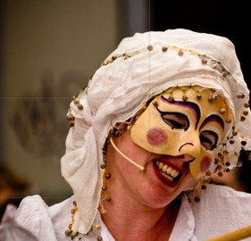
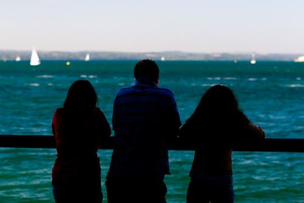
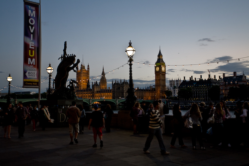

Compositie
Veel beginners in de fotografie maken volop gebruik van het middelste autofocus punt – lekker in het midden, meestal het grooste punt – en plaatsen mede hierdoor het onderwerp van de foto precies in het midden. Zo lang de foto scherp is en de persoon herkenbaar is, is dit zeker niet fout, maar er is zoveel meer mogelijk. Hoe breng je het onderwerp zo in beeld dat het ook een mooie, creatieve, gebalanceerde en/of interessante foto wordt?
Er zijn een aantal gouden regels in de fotografie die je kunt toepassen om een ‘goede’ compositie te bereiken. Onderstaand een overzicht. Maar let op, zoals met zo veel zaken in de fotografie moet niets.
Regel van derde
Als je kijkt naar foto’s van professionele fotografen, dan zul je zien dat de onderwerpen vaak op 1/3e of 2/3e van de foto geplaatst zijn. Dit is expres zo gedaan en heet de “regel van derden”. Zo werkt het: teken in gedachten een boter kaas en eieren speelveld over je beeld heen (twee lijnen verticaal en twee horizontaal op gelijke afstand) en probeer het onderwerp op of dicht bij één van de vier snijpunten te plaatsen. Als je gebruik maakt van deze regel ervaart het menselijk oog de foto als meer gebalanceerd en natuurlijker. Hieronder een voorbeeld, je kunt op beide plaatjes klikken voor een vergroting...
Het gezicht op bovenste voorbeeld is op het bovenste linkersnijpunt geplaatst, daarmee wordt de foto gebalanceerder dan het gezicht direct in het midden plaatsen. Daarnaast is er nu ook meer ruimte voor haar hand die ook iets uitdrukt. De kasteeltoren is op het rechtersnijpunt geplaatst, de reflectie vult de onderste helft van het beeld. De horizon is niet op de 1/3 of 2/3 hoge lijn geplaatst, het zwart zou de overhand krijgen of de reflectie zou er aan de andere kant af vallen. Een compromis dat gedeeltelijk met de ‘regels’ breekt.
Vrijmaken van de achtergrond
Om de aandacht goed op het onderwerp gericht te krijgen moet je het proberen vrij te maken van de achtergrond. Dit kan door de achtergrond onscherp te maken waardoor het scherpe deel uit de foto springt, maar ook bijvoorbeeld met contrasten in kleur of licht en donker. Hier een voorbeeld...
Door de mensen die over de railing hangen bijna tot een silhouet te reduceren is er een contrast tussen de voorgrond en de achtergrond waardoor deze los van elkaar komen.
Voorgrond-achtergrond
Een andere tip is het plaatsen van iets interessants op de voorgrond van een foto. Als je bijvoorbeeld een landschap fotografeert, probeer een boom / kerk / rotsen, etc. te vinden, en op een snijpunt te plaatsen, waardoor je iets interessants toevoegt op de voorgrond en daarmee ook meer dieptewerking in de foto krijgt. En dan nu weer een voorbeeld...
Een foto van de Houses of Parliament tijdens zonsondergang in Londen is wel aardig, maar daar zijn er dertien in een dozijn van. Door de drukte bij dit populaire stukje Londen te laten zien op de voorgrond wordt er diepte gecreëerd en is de foto een stuk interessanter geworden.
Wees creatief!
Hoe meer je experimenteert en oefent, hoe sneller je het gewenste effect bereikt en tot interessante composities komt.Boven staande voorbeelden zijn maar een paar voorbeelden, er zijn nog veel meer mogelijkheden! Het uiteindelijk doel is dat de kijker net even wat langer naar jouw foto kijkt dan naar die van de ander. Dat kan zijn omdat het onderwerp verrassend of interessant is of juist omdat het heel bizar in beeld is gebracht.
maar wijk ook vooral af van “de regels”. Elk onderwerp vraagt zijn eigen aanpak en soms is het juist weer beter om een onderwerp midden in het beeld te zetten, de horizon schuin te laten lopen of een gek scherpstelpunt toe te passen. Het belangrijkste is dat je lol hebt in je hobby/werk. Ga op pad, een foto die je wel neemt is oneindig veel beter dan een foto die je niet neemt. Met veel oefening en experimenteren krijg je het vanzelf in de vingers, neem het niet te serieus en geniet van het proces. Goed en fout bestaat niet, een compositie die werkt is per definitie een goede compositie.